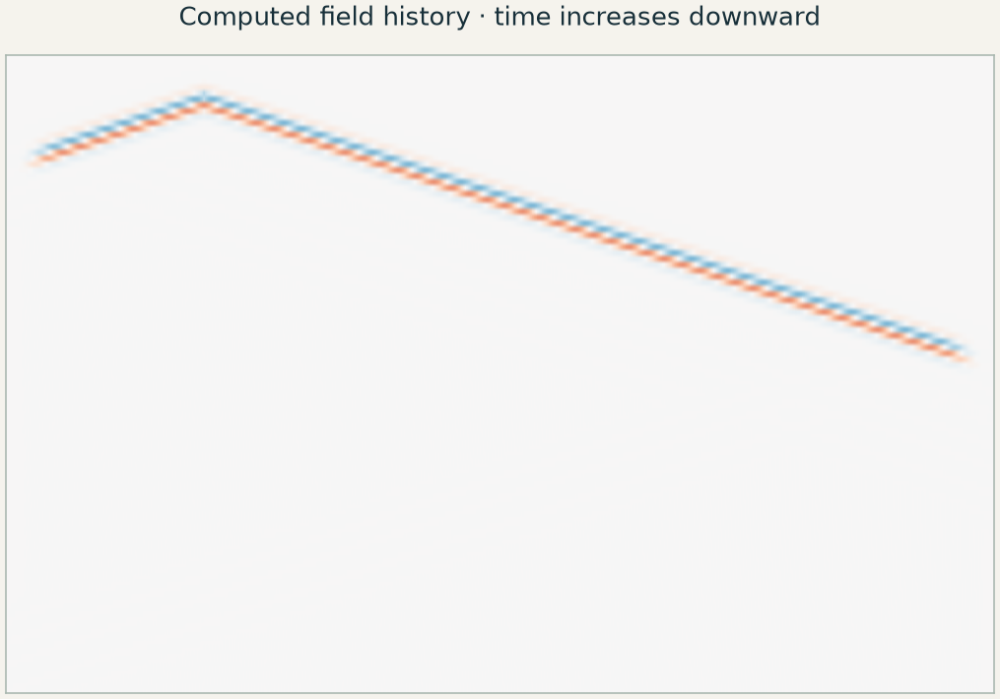

E09 / AN INTERACTIVE OPTICS LESSON
Update a neighbour.
Watch a wave emerge.
Solve Maxwell’s coupled field equations with staggered samples, then find out why time steps, pixels, and computational boundaries are part of the physics calculation.

BEFORE E09 / PREREQUISITES
Check your starting point.
Useful earlier lessons: E01, E07
- Coupled electric and magnetic fields. Recognize the coupling between changing electric and magnetic fields.Used here: The solver advances both fields in alternating updates.
- Derivatives on a sampled grid. Approximate a derivative with neighboring samples and read partial derivatives as local rates of change.Used here: The Yee grid replaces spatial and temporal derivatives by staggered differences.
Need a refresher? Open the recommended reading.
Use the indicated sections for an unfamiliar idea, then return to this lesson.
- OpenStax · University Physics Volume 2, §16.1 ↗
Read Maxwell's Equations and the discussion connecting changing electric and magnetic fields. Concentrate on Faraday's and Ampère–Maxwell's laws.
- MIT OCW · Lecture 10: Finite Differences in Time ↗
Focus on replacing a derivative by a difference quotient and taking successive Euler steps. The stability discussion gives useful context for E09.
For the notebook: Use neighboring array slices and a time loop; distinguish field samples, probes, and recorded traces.
NumPy · The absolute basics for beginners ↗
Developed in this lesson: Construct a Yee update, test its time-step limit, and measure boundary reflections and PML performance.
Browse all prerequisites and learning resources →E09 / THE FIVE-MINUTE FILM
Maxwell on a grid
Watch the story, then use the experiment below to test the ideas yourself.
5:16 · E09 · Maxwell on a gridWatch on YouTube ↗
What to notice first.
Maxwell’s equations couple electric and magnetic fields through spatial derivatives. In one dimension, with E along z and propagation along x, the magnetic field lies along y. In normalized units, the two update equations connect neighboring samples rather than solving for an entire field at once.
Here S = c₀Δt/Δx is the Courant number, ε is relative permittivity, and Δₓ means a difference between adjacent samples without division by Δx. The electric field is stored at integer positions and times. The magnetic field is half a cell away and half a time step behind. Updating H first and E second advances them in a leapfrog.
Staggering is not a plotting inconvenience. The difference of two values approximates a derivative at their midpoint, so the other field naturally belongs there. The same idea applies in time. For a physical wave traveling in +x with these axis conventions, Hᵧ = −nE_z; opposite signs do not mean opposite propagation directions.
The browser computes a real 1D Yee simulation. A soft electric source launches pulses both left and right. The left edge always absorbs. The right edge can be a wall, an abrupt electric-loss layer, or a matched graded CPML. A dielectric interface can be inserted at x = 8.
By the end, you can
- Explain the spatial and temporal staggering of a Yee update.
- Distinguish instability, numerical dispersion, and boundary reflection.
- Measure reflection with a reference run and verify an absorber by refinement.
PREDICT BEFORE YOU CHANGE A CONTROL
A layer absorbs light strongly. Does that guarantee it produces little reflection where the wave first enters it?
02 / TEST YOUR PREDICTION
Change one thing.
Follow what changes.
All plotted fields and curves are calculated from the stated model. Keep the other controls fixed while testing a prediction.
Model: 1D normalized Yee fields with real, nondispersive ε = n² and μ = 1. The PML specialization uses cubic grading with κ = 1 and α = 0. The electric source is bidirectional. The field display clips amplitudes outside ±1; the growth plot reports actual maxima and stops at 10⁶.
- Run the matched-boundary case. Watch the field and probe trace, then repeat with a wall and the electric-loss layer at identical sampling.
- Insert n = 1.5. Locate the reflected and transmitted pulses. Do not infer reflectance by comparing unrelated instantaneous peaks.
- Run the unstable preset. Observe exponential growth and the automatic stop, then reduce S without changing the spatial grid.
The grid has its own limits.
For the vacuum 1D Yee scheme used here, stability requires S ≤ 1. In equal-grid 2D, the corresponding limit is S ≤ 1/√2. These are different bounds: a value that is safe in one dimension can be unstable in two. The notebook labels dimensionality explicitly and seeds a tiny alternating perturbation so an unstable mode becomes visible reproducibly.
Stability is only the first check. A stable grid can give the wrong phase velocity because finite differences have a different dispersion relation from continuous derivatives. Coarse pixels accumulate phase error as the wave travels. Cells must be counted per wavelength inside the highest-index material, not just per vacuum wavelength.
The sum has one term in the browser and two in the optional 2D calculation. Increasing resolution should move numerical results toward the continuum answer. A small-looking pixel size alone is not evidence of convergence.
Absorption and matching solve different problems.
An abrupt electric conductivity dissipates energy but changes wave impedance, so its entrance reflects. A perfectly matched layer modifies the derivative operators in a coordinated way. In the continuum idealization its entrance is matched while waves attenuate inside. CPML realizes the frequency-dependent stretch with memory variables in the time-domain update.
The discrete implementation still has a finite reflection error. Its electric and magnetic loss profiles must be sampled at their actual staggered positions. Grading, layer thickness, resolution, and incidence conditions affect the residual. Calling a region PML is not a substitute for measuring its echo.
The notebook subtracts a larger-domain reference field from a test trace, then gates the reflected arrival. It also compares the dielectric step with Fresnel reflectance. For precise power balance, electric and magnetic fields must be colocated in both space and time before calculating flux; simply squaring an arbitrary field sample can hide staggering error.
04 / CHECK YOUR UNDERSTANDING
Make a prediction before checking the explanation.
Can you explain the change?
Your own computational experiment.
The standalone notebook builds the model in small steps, draws the results, and checks the calculation against independent predictions. It runs on CPU using NumPy, SciPy, and Matplotlib. No repository clone, GPU, or external dataset is needed.
A short lab report
- Measure an interface. Estimate reflectance for n: 1 → 1.5 with a reference-subtracted, time-gated trace.
- Audit the boundary. Compare wall, loss layer, and CPML with identical excitation and a larger-domain reference.
- Separate two failures. Create a stable coarse run and an unstable fine run, then explain why each is unreliable.
Compare your reasoning
Measure an interface
Compare with ((1−1.5)/(1+1.5))² = 0.04, then refine the grid. Keep incident normalization and arrival windows fixed physically.
Audit the boundary
Subtract fields before squaring. Distinguish amplitude echo ratios from integrated reflected-power estimates.
Separate two failures
The first can accumulate dispersion error; the second violates the time-step stability bound. Refining space without reducing Δt can make stability worse.
Optional deeper extension
Run a compact 2D TMz Yee solver with CPML, compare its residual against a larger domain, and repeat grid-dispersion and Courant tests.
The notebook marks the extension clearly. Complete the core experiment and its checks first.
Instructor notes and assessment rubric ↗ · Model, setup, and reproducibility ↗
Know what the model leaves out.
1D normalized Yee fields with real, nondispersive ε = n² and μ = 1. The PML specialization uses cubic grading with κ = 1 and α = 0. The electric source is bidirectional. The field display clips amplitudes outside ±1; the growth plot reports actual maxima and stops at 10⁶.
Video companion: watch the E09 film above (5:16).